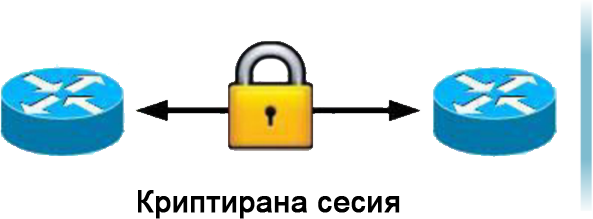
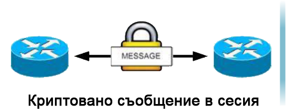
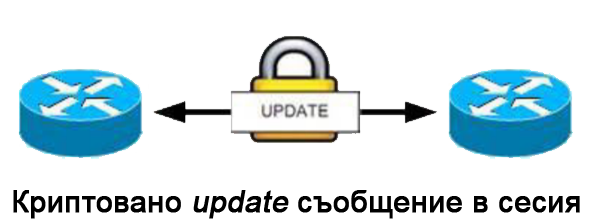

Когато говорим за концепциите за защита срещу атаки, трябва да се спомене, че има техники за защита на самия BGP рутер, но и за защита на BGP протокола, тоест самата BGP връзка.
Във всеки случай има някои основни неща, които трябва да задоволява самото устройство,
което има ролята на рутер. Първо трябва да определите как администраторът ще има достъп до рутера.
След това е важно да дефинирате метода за удостоверяване между администратора и рутера, както и начина,
по който кодовете за достъп ще се съхраняват на рутера.
Традиционно рутерът се контролира от отдалечен достъп чрез telnet инструменти, но проблемът е, че самата комуникация чрез telnet инструменти не е криптирана и кодовете за достъп се изпращат чрез връзка с ясен текст. Поради това всички отдалечени достъпи до рутер трябва да бъдат secure shell (SSH) и telnet трябва да бъде деактивиран. В допълнение към кода за достъп трябва да има код за активиране. Този код е най-близо до основния акаунт в операционната система Linux и трябва да бъде зададен по този начин Според нея, следователно самата парола за достъп и активиране трябва да е много силна. По подразбиране паролите за IOS не се съхраняват криптирани и следователно трябва да бъдат криптирани със специална команда за криптиране на парола на услугата в режим на глобална конфигурация. service password-encryption
В допълнение към горните мерки, има някои други мерки за защита на рутера. Той трябва да бъде инсталиран в защитена стая, където само оторизирани администратори имат достъп. Рутерът трябва да бъде конфигуриран с най-поддържаната памет, за да може да избегне DoS атака. Поради възможността от проблеми със захранването, рутерът трябва да бъде свързан към UPS. Рутерът трябва да има инсталирани най-новите версии на фърмуера и софтуера.
Има възможност BGP съседът да обяви грешен маршрут до BGP рутера, така че рутерът вече няма да може да изпраща трафик към тази конкретна мрежа.
Същият ще бъде случаят, ако съсед на BGP представи погрешно маршрута на организация към другите си съседи, така че мрежата на организацията няма да бъде достъпна. (reachable)
Основната защита срещу този тип злоупотреба е да се филтрират маршрутите, които BGP рутерът на организацията трябва да се обади на своя BGP съсед и обратно. Тези проблеми се решават основно чрез споразумение между двете страни относно техните политики и по този начин се постига отговор кой трафик трябва да бъде разрешен да влиза и излиза от мрежата. Споменатият метод ще спре повечето атаки от нападатели, които имитират IP адреса на съседния BGP и се опитват умишлено да обявят грешни маршрути.
Един от най-бързите и най-сигурните криптографски хеш методи е удостоверяването на съобщението.
Това най-често се използва при комуникация между два съседни BGP рутера.
MD5 ключ в TCP заглавката и BGP данни се добавят към всеки пакет, обменен в BGP комуникацията на два съседа. Това проверява и проверява всеки сегмент от TCP сесията, за да защити съобщението от модификация. Сесия между два BGP рутера няма да бъде установена, докато паролите не съвпаднат.
BGP защита на рутера
Защита 1.1Традиционно рутерът се контролира от отдалечен достъп чрез telnet инструменти, но проблемът е, че самата комуникация чрез telnet инструменти не е криптирана и кодовете за достъп се изпращат чрез връзка с ясен текст. Поради това всички отдалечени достъпи до рутер трябва да бъдат secure shell (SSH) и telnet трябва да бъде деактивиран. В допълнение към кода за достъп трябва да има код за активиране. Този код е най-близо до основния акаунт в операционната система Linux и трябва да бъде зададен по този начин Според нея, следователно самата парола за достъп и активиране трябва да е много силна. По подразбиране паролите за IOS не се съхраняват криптирани и следователно трябва да бъдат криптирани със специална команда за криптиране на парола на услугата в режим на глобална конфигурация. service password-encryption
В допълнение към горните мерки, има някои други мерки за защита на рутера. Той трябва да бъде инсталиран в защитена стая, където само оторизирани администратори имат достъп. Рутерът трябва да бъде конфигуриран с най-поддържаната памет, за да може да избегне DoS атака. Поради възможността от проблеми със захранването, рутерът трябва да бъде свързан към UPS. Рутерът трябва да има инсталирани най-новите версии на фърмуера и софтуера.
Защита от атака на BGP връзка
Защита 1.2Основната защита срещу този тип злоупотреба е да се филтрират маршрутите, които BGP рутерът на организацията трябва да се обади на своя BGP съсед и обратно. Тези проблеми се решават основно чрез споразумение между двете страни относно техните политики и по този начин се постига отговор кой трафик трябва да бъде разрешен да влиза и излиза от мрежата. Споменатият метод ще спре повечето атаки от нападатели, които имитират IP адреса на съседния BGP и се опитват умишлено да обявят грешни маршрути.
Hashing
Защита 1.3


